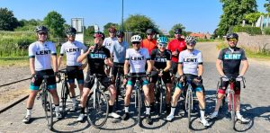

Over ons
Een fietsclub van Lentgenoten, sinds 2014
Onze geschiedenis
Fietsclub VCL is in 2014 ontstaan uit een groep enthousiaste Lentgenoten die hun passie wilden delen. Wat begon als een klein groepje vrienden is uitgegroeid tot een fietsgroep van 50 fietsers.
Onze missie
We willen mensen inspireren om samen te fietsen, nieuwe routes te ontdekken en plezier te hebben in het fietsen. We geloven in het verbinden van mensen door middel van sport en het delen van ervaringen.

Voor iedereen
Of je nu beginner bent of ervaren fietser, als je in een groep kunt fietsen met een gemiddelde snelheid van 30–32 km/u (Piano, piano) of 34–36 km/u (Gas op de lolly), dan kun je altijd meefietsen.
Gezelligheid
Naast het fietsen organiseren we ook sociale activiteiten zoals technische avonden, borrels en pubquiz om elkaar beter te leren kennen.
Meefietsen?
Wil je ook meefietsen? Stuur dan een berichtje naar VeloClubLent@gmail.com.
- Donderdagavond fietsen
- Zondagochtend fietsen
- Sociale activiteiten en evenementen